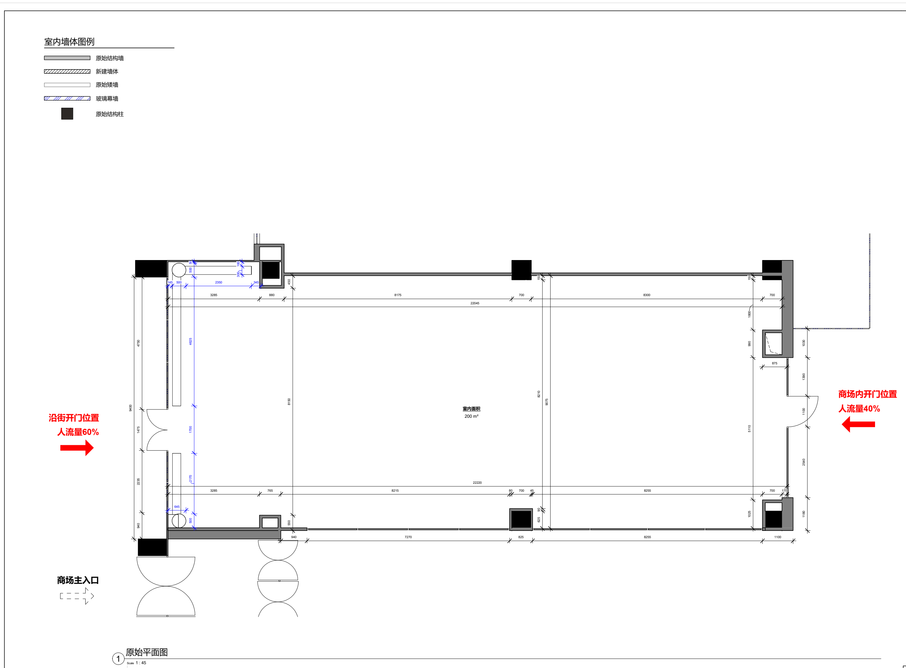
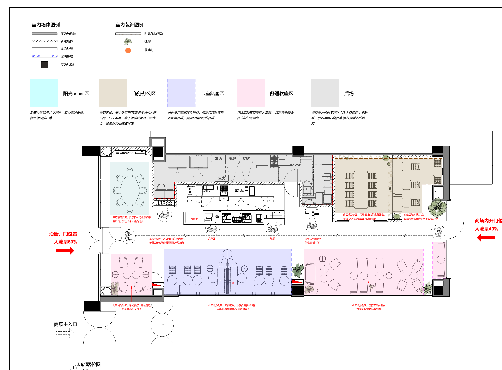

导入图纸
支持 PNG、PDF、DXF、SVG，后期接入 RVT 云端转换，把建筑边界和固定要素抽成 JSON。
Why It Matters
商业空间方案阶段需要大量试错：入口、人流、功能分区、展示面、后场、座位容量都在互相拉扯。这个工具把“找案例、拆图、摆方案、写说明”变成一个可对话、可编辑、可沉淀的流程。


Workflow
LLM 负责理解需求、复用案例和生成策略；几何引擎负责坐标、避让、碰撞与通道校验。这样生成的方案既有创意，也能保持工程约束。
支持 PNG、PDF、DXF、SVG，后期接入 RVT 云端转换，把建筑边界和固定要素抽成 JSON。
用户确认入口、人流比例、柱子、后场、不可动墙、最小通道宽度和可设计区域。
从历史 Revit 和成品图纸案例库中找到相似空间，参考布局逻辑和表达风格。
AI 输出多套策略，几何引擎生成分区、家具、动线、文字和图例。
用户选择方案，对话修改或手动编辑，最终导出 PDF、PNG、SVG、DXF 和 JSON。
Product Shape
早期推荐做 Web App。左边是锁定底图和可编辑图层，右边是项目条件、AI 对话、方案卡片和评分。用户不必会 Revit，也能快速参与方案决策。
30s
从确认项目条件到生成首批方案卡片。
3-8
一次输出多个可比较、可继续编辑的方案。
15min
完成第一版功能落位汇报图导出。
JSON
每个最终方案沉淀为可复用案例资产。
Audience
不要从泛家装或最终施工图切入。更好的早期市场是连锁品牌、商业设计团队、招商租赁和办公 test-fit，它们都需要更快看到多个可讨论方案。
把历史 Revit 和成品图纸转成案例库，快速生成多版功能分区、动线和汇报图，减少重复劳动。
拿到铺位图后快速判断空间潜力，比较座位、展示、后场和动线策略，提升选址决策效率。
为潜在租户快速展示空间可用性，把空铺从“面积数字”变成可想象的未来经营场景。
Roadmap
MVP 的关键不是一次性解决所有格式，而是证明用户愿意上传图纸、生成方案、继续编辑并导出。RVT 云转换和专用模型放在第二阶段之后更稳。
支持 PNG/PDF，用户绘制边界和入口，AI 生成 3-6 个功能落位方案，导出 PNG 和 JSON。
建立历史案例结构化入库流程，支持相似案例检索、方案评分、局部重生成和编辑器精修。
开发 Revit Add-in 或接入 Autodesk APS，把 RVT 批量转换成空间语义 JSON，支持团队案例库和标准化输出。
用用户选择、修改 diff 和最终方案训练排序模型、偏好模型和专用布局生成模型。
第一版不追求施工图深度，而是服务方案会议、客户沟通和内部脑暴。只要用户愿意选择一个方案继续编辑，这个产品闭环就成立了。